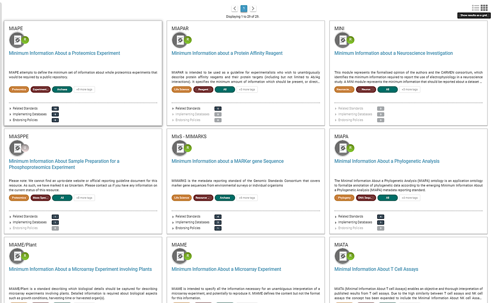
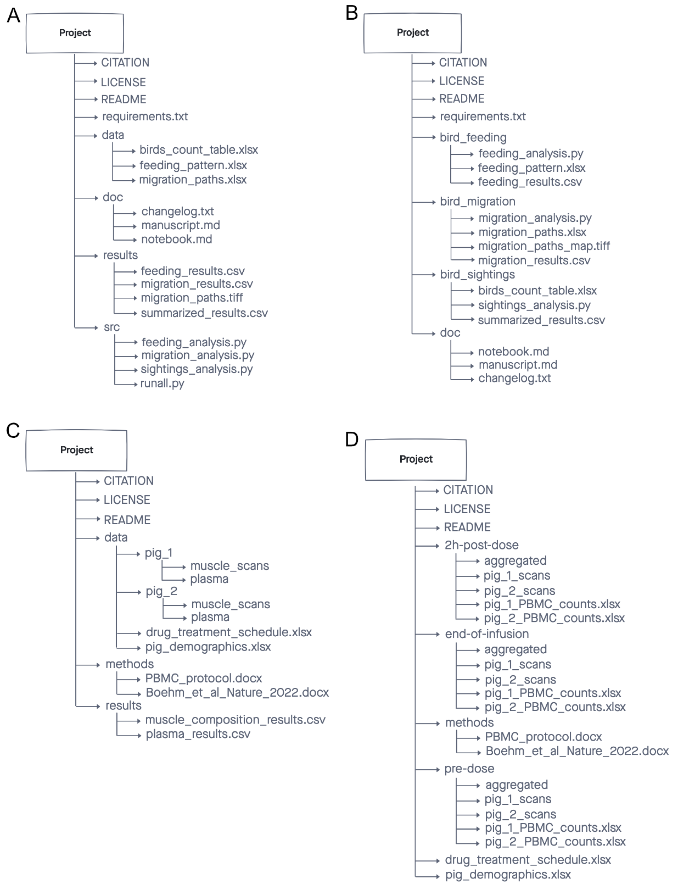
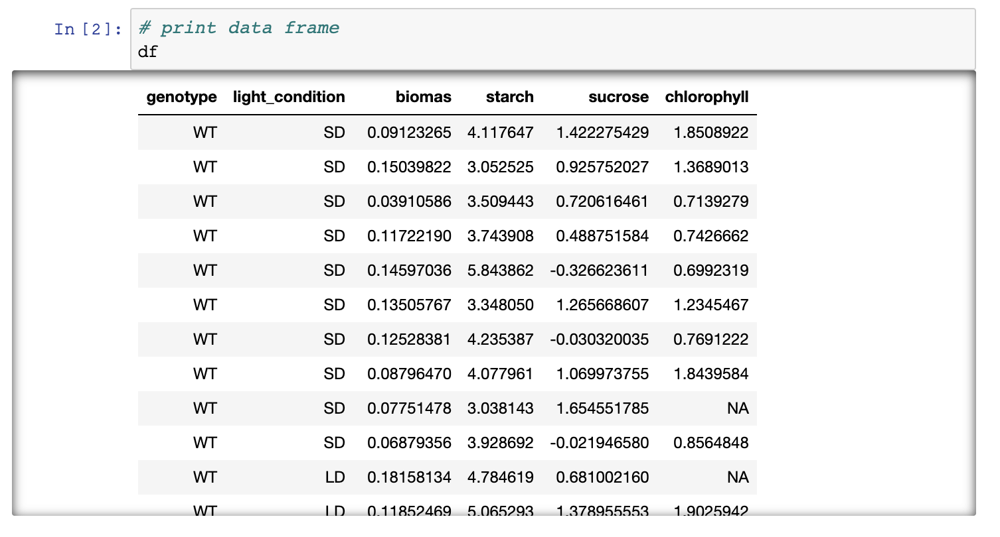

Content from Introduction to Open Science and FAIR principles
Last updated on 2024-03-22 | Edit this page
Estimated time: 70 minutes
Overview
Questions
- What is Open Science?
- How can I benefit from Open Science?
- What are the FAIR guidelines?
- Why is being FAIR important?
Objectives
- Identify the components of the Open Science movement, their goals, and motivations.
- Explain the key benefits of Open Science.
- Recognize the barriers and challenges associated with adopting Open Science practices.
- Identify common issues that hinder data reusability.
- Understand the FAIR principles.
(10 min teaching)
Science thrives on the exchange and development of ideas. The most efficient scientific progress involves well-informed questions and experiments, which necessitates the free exchange of data and information.
All practices that make knowledge and data freely available fall under the umbrella term of Open Science/Open Research. It fosters greater reproducibility, transparency, and accessibility in science. As science becomes more open, the way we conduct and communicate scientific findings continuously evolves.
What is Open Science
Open science is the movement to make scientific research (including publications, data, physical samples, and software) and its dissemination accessible to all levels of an inquiring society, amateur or professional.
Open Science represents a new approach to the scientific process based on collaborative work and utilizing digital technologies and new collaborative tools to disseminate knowledge.
Open science promotes transparent and accessible knowledge that is shared and developed through collaborative networks.
Characteristics:
- Utilizing web-based tools to facilitate information exchange and scientific collaboration
- Transparency in experimental methodology, observations, and data collection
- Public availability and reusability of scientific data, methods, and communications
- Diverse outputs and target audiences
What is the Open Science movement?
The distribution of knowledge has always had room for improvement. While the internet was initially developed for military purposes, it was ultimately used for communication between scientists, providing a viable path to transform how science is disseminated.
The momentum has grown alongside a shift in how science is communicated, reflecting the needs of research communities. Open Science addresses many of the pressing issues we face today, such as impact factors, data reusability, the reproducibility crisis, and trust in the public science sector.
Open Science is the movement to increase transparency and reproducibility of research through the adoption of open best practices.

After Gema Bueno de la Fuente
Open Science Building Blocks
Open Access: Research outputs are hosted in a way that makes them accessible to everyone. Traditionally, Open Access referred to journal articles, but now encompasses books, chapters, or images.
Open Data: Data is freely and readily available to access, reuse, and share. Smaller data sets were often included as supplemental materials alongside articles in journals. However, they should be hosted on dedicated platforms for more convenient and improved access.
Open Software: Software with readily available source code; others can freely use, modify, and share it. Examples include the coding language and supporting software R and RStudio, as well as image analysis software like Fiji/ImageJ.
Open Notebooks: Lab notebooks hosted online, readily accessible to all. These are popular among some large funding bodies and allow anyone to comment on any stage of the experimental record.
Open Peer Review: A system where peer review reports are published alongside the research work. This can include reviewers’ reports, correspondence between involved parties, rebuttals, editorial decisions, etc.
Citizen Science: Lay people contribute to scientific research, most commonly in data collection or image analysis. Platforms like https://www.zooniverse.org/ connect projects with interested laypeople who can actively participate in research, helping to generate and/or process data that would be unachievable by a single person.
Scientific social networks: Networks of researchers, often meeting locally in teams but also connected online, foster open discussions on scientific issues. Many researchers use traditional social media platforms for this purpose, such as Twitter, Instagram, various subreddits, discussion channels on Slack/Discord, etc. There are also dedicated spaces like https://www.researchgate.net/.
Open Educational Resources: Educational materials that are free for anyone to access and use for learning. These can be anything from talks, instructional videos. This very course is a perfect example of that!
Benefits of Open Science
Possible benefits and consequences for each Open Science module:
Open Access
- Faster dissemination of knowledge
- Levels the playing field for underfunded institutions that wouldn’t otherwise be able to access research behind paywalls
- Prevents articles from being paid for “three times” (first to produce, second to publish, third to access) by institutions
- Increases access to work by others, leading to greater exposure and citations
- Provides access to research for laypeople, thus increasing public awareness of science
Open Data
- Ensures data isn’t lost over time - promotes reusability
- Accelerates scientific discovery
- Provides value for money and reduces redundancy
- Allows for statistical re-analysis of data to validate findings
- Gives access to datasets not published in papers (e.g., negative results, large screening data sets)
- Provides a way to generate new hypotheses
- Enables the combination of multiple data sources to address questions, providing greater power than a single data source
Open Software
- Excellent resource for learning programming skills
- The ability to modify software fosters a supportive community of users and rapid innovation
- Saves time
- Enables faster bug fixes
- Encourages better error scrutiny
- Using the same software/code allows for better reproducibility between experiments
- Requires funding to maintain and update software
Open Notebooks
- Promotes 100% transparent science, allowing input from others at early stages of experiments
- Provides a source for learning about the scientific process
- Allows access to experiments and data that otherwise might never get published
- Provides access to ‘negative’ results and failed experiments
- Anyone, anywhere in the world, can access projects at any time, enabling simultaneous input from many users
- Offers the possibility of immediate feedback
- Provides thorough evidence of the originality of ideas and experiments, reducing the impact of “scooping”
Open Peer Review
- Visibility leads to more constructive reviews
- Mitigates against editorial conflicts of interest and/or biases
- Mitigates against reviewer conflicts of interest and/or biases
- Allows readers to learn and benefit from reviewers’ comments
Open Educational Materials
- Fosters collaboration between educators and others
- Clearly demonstrates how methods are taught (e.g., Carpentries materials), which can be reproduced anywhere, anytime
- Protects materials from becoming technologically obsolete
- Authors who prepare or contribute materials can receive credit (e.g., GitHub)
- Enables the reuse of animations and excellent materials (why reinvent the wheel?)
Motivation: Money (8 min teaching)
We must consider the ethical implications that accompany the research and publication process. Charities and taxpayers fund research, and then pay again to access the research they already funded.
From an economic viewpoint, scientific outputs generated by public research are a public good that everyone should be able to use at no cost.
According to an EU report titled “Cost-benefit analysis for FAIR research data: https://op.europa.eu/en/publication-detail/-/publication/d375368c-1a0a-11e9-8d04-01aa75ed71a1”, €10.2 billion is lost every year due to inaccessible data (with an additional €16 billion lost if we consider data reuse and research quality).
Open Science aims to make research and research data accessible to those who funded the research, such as charities and taxpayers.
The majority of large funding bodies in the UK and other countries are now making Open Access publication a condition of funding. As a result, Open Access is becoming the most widespread aspect of the Open Science movement, adopted by the majority of researchers.
Personal motivators
Open Science offers advantages to many stakeholders in science (including the research community, funding bodies, the public, and even journals), leading to a push for widespread adoption of Open Science practices.
Large UK funding bodies like The Wellcome Trust are strong supporters of Open Science. The example of Open Access demonstrates that enforcement by funders (the stick) can lead to widespread adoption. But what about the personal motivators, the carrots?
Exercise 1: Personal benefits of being “open” (5 min)
Open Science practices offer a variety of advantages for researchers. Read through the list below and consider which benefits resonate most with you.
Select two the most important/attractive for you and mark them with +1, select the two least important for you and mark them with 0
- receive higher citations
- complying with funders’ policies
- get extra value from your work (e.g. collaborators, reuse by modellers, ML specialists)
- demonstrate research impact
- save own time (reproducibility but also communication overhead)
- become pioneers
- distinguish yourself from the crowd
- plan successful research proposals
- gain valuable experience
- form community
- increased speed and/or ease of writing papers
- speed up and help with peer review
- build reputation and presence in the science community
- evidence of your scientific rigour and work ethic
- avoid embarrassment/disaster when you cannot reproduce your results
Can you think of other benefits?
How personal benefits of Open Science compare to the benefits for the (scientific) society?
(5 min teaching)
Open Science offers distinct advantages for both researchers and society at large. The public benefits from immediate access to research outputs, leading to faster scientific progress and innovation.
For researchers, the benefits take longer time, as open data and publications need to time to lead to citations, collaborations, and recognition within the scientific community
DORA: Declaration on Research Assessment
The San Francisco Declaration on Research Assessment (DORA) emphasizes the limitations of using metrics like Journal Impact Factors (JIF) to solely evaluate research. DORA advocates for assessing research based on its inherent merit and contributions, promoting fairer and more transparent evaluation practices. This shift acknowledges the importance of research quality, openness, and its broader societal impact.
Funders Embrace DORA Principles
Research funders worldwide are increasingly endorsing DORA principles. Leading institutions like Wellcome Trust and Cancer Research UK incorporate DORA criteria into their funding applications. These funders prioritize research outputs, mentorship contributions, and public engagement plans, supporting research that generates valuable knowledge, fosters collaboration, and benefits society.
Narrative CV as a DORA-Compliant Assessment Tool:
The Narrative CV aligns with DORA principles by focusing on key dimensions that reflect a researcher’s contributions:
- Generation of Knowledge: Acknowledging diverse outputs such as datasets, patents, and software.
- Development of Individuals and Collaborations: Highlighting mentorship and collaborative endeavors that enrich the research ecosystem.
- Societal and Economic Impact: Demonstrating the societal and economic impacts of research beyond academic circles.
- Supporting the Research Community: Engaging in open science practices and ensuring the accessibility of research outputs.
This framework prioritizes open science practices to maximize research impact and visibility. Additionally, new metrics like retweets, online views/downloads, discussions, and media coverage are considered, providing a more comprehensive understanding of research impact in the digital age.
Why Embrace Open Practices?
Open Science practices not only uphold ethical research conduct but also enhance the credibility and reach of your work. The Narrative CV and the adoption of DORA by leading funders exemplify the research community’s shift towards a more transparent and equitable assessment paradigm. Choosing open practices demonstrates not just integrity, but also a recognition that authenticity and transparency are fundamental to scientific progress. After all, timestamps and meticulous documentation make faking open practices far more difficult than simply adhering to them.
Barriers and risks of the Open Science movement:
- Data Sensitivity: Anonymizing data from certain sources, like administrative health records, can be complex and time-consuming.
- Intellectual Property (IP) Concerns: Researchers might hesitate to share data if it could compromise potential patents or other intellectual property.
- Misuse of Data: Open data carries a risk of misinterpretation or misuse, potentially leading to the spread of misinformation (e.g., “fake news”).
- Lack of Recognition for Negative Results: Publishing negative or inconclusive findings can be less rewarding in the current academic evaluation system.
- Time and Cost: Making research outputs open and user-friendly requires time and resources for proper data curation, storage, and dissemination. This can be especially challenging for large datasets.
- Lack of Expertise: Researchers might not have the necessary skills or training to effectively manage and share data openly.
- Fear of Criticism: The prospect of open peer review or public scrutiny can be daunting, leading some researchers to shy away from open science practices.
(8 min teaching)
There are valid reasons why some researchers hesitate to embrace Open Science entirely.
Data sensitivity is a major concern. Data privacy laws require careful handling of sensitive data, and anonymization can be a complex process.
Anonymising data to desensitise it can help overcome this barrier.
Intellectual property (IP) considerations are another hurdle. Researchers may be hesitant to share data that could compromise the patenting or commercialization of their discoveries. However, careful data filtering can often address these concerns. For IP protection it is the timeline of public disclosure that matters not fact making them public.
Pre-prints, while valuable for rapid knowledge dissemination, can be misused, particularly in fast-moving fields like public health research. Unreviewed pre-prints have the potential to mislead policymakers and the public if not interpreted with caution. This can result in political and health decision making based on faulty data, which is counter to societies’ best interest.
The fear of negative feedback can also be a barrier. However, open peer review is a crucial part of the scientific process. Identifying and correcting errors through open review strengthens research and fosters a culture of transparency.
We should seek for our work to be scrutinized and errors to be pointed out, and is the sign of a competent scientist. One should rather have errors pointed out rather than risking that irreproducible data might cause even more embarrassment and disaster.
Lack of Expertise: Researchers might not have the necessary skills or training to effectively manage and share data openly.
One of the biggest barriers are the costs involved in “being Open”. The time and financial investment required for Open Science practices can be a significant barrier. Making data readily accessible and usable takes effort, and data storage can be expensive, especially for large datasets.
For example, microscopy datasets reach sizes in terabytes, making such data accessible for 10 years involves serious financial commitment.
Being FAIR
We’ve explored the advantages of Open Science practices for both the scientific community and individual researchers. While Open Access has made recent biomedical publications readily available, the same accessibility often isn’t the case for the underlying data and software.
What is Data?
The term “scientific data” encompasses a wider range than many might initially think. It’s not limited to just numbers in spreadsheets! Data can include:
- Images: Microscopy images, but also gels, blots, and other visual representations of findings.
- Biological Information: Details about research materials, like specific strains, cell lines, or patient demographics.
- Biological Models: Computational models used in simulations or analyses.
- Protocols: Step-by-step procedures for lab experiments or data collection methods.
- Code: Scripts, analysis routines, and custom software used to generate results.
While there are specific best practices for sharing code, it’s still considered a form of research data.
Let’s delve into the challenges associated with accessing and using data from published biological research.
Exercise 3: Impossible protocol
(5 min breakout, plus 10 talking about both problems)
You need to do a western blot to identify Titin proteins, the largest proteins in the body, with a molecular weight of 3,800 kDa. You found an antibody sold by Sigma Aldrich that has been validated in western blots and immunofluorescence. Sigma Aldrich lists the Yu et al., 2019 paper as reference.
Find details of how to separate and transfer this large protein in the reference paper.
- Hint 1: Methods section has a Western blot analysis
subsection.
- Hint 2: Follow the references.
Would you say that the methods was Findable? Accessible? Reusable?
- Ref 17 will lead you to this paper, which first of all is not Open Access
- Access the paper through your institutions (if you can) and find the ‘Western Blotting’ protocol on page 232 which will show the following (Screenshot from the methods section from Evilä et al 2014):
 Figure 1. Impossible Protocol
Figure 1. Impossible Protocol- “Western blotting were performed according to standard methods.” - with no further reference to these standard methods, describing these methods, or supplementary material detailing these methods
- This methodology is unfortunately a true dead end and we thus can’t easily continue our experiments!
Impossible numbers
Ikram 2014 paper contains data about various metabolites in different accessions (genotypes) of Arabidopsis plant. You would like to calculate average nitrogen content in plants grown under normal and nitrogen limited conditions. Please calculate the average (over genotypes) nitrogen content for the two experimental conditions.
- Hint 1. Data are in Supplementary data
- Hint 2. Search for nitrogen in paper text to identify the correct data column.
- Finding the right table and column containing the relevant data is already problematic as the headers are obscured so they need to decoded using manuscript
- Data in pdf table so they cannot be readily used in calculations
- Depending on the software used to open (and the way the pdf was
created), the local machine international settings, copying the data
into Excel can bring unexpected results

Data needs parsing after coping to Excel
The same data copied to Excel with polish locale has been converted to dates - In general pdf tables cannot be read programmatically from R or Python.
The above examples illustrate the typical challenges in accessing research data and software.
Firstly, data, protocols, and software often lack a distinct identity, existing only as supplements to publications.
Second, accessibility and reusability are often compromised. For instance, all details might be buried within a single supporting information PDF file. These files often contain “printed” numerical tables or even source code, both of which require manual re-entry for use by others. Additionally, data may be shared in proprietary file formats specific to a particular vendor, inaccessible without the accompanying software. Finally, data files are often provided without detailed descriptions beyond the full article text, hindering reusability.
In our examples, the protocol was difficult to find (the loops), access (paywall), and reuse due to a lack of necessary details (dead-end). Similarly, in the second example, the data were not interoperable or reusable as they were only available as a figure graph.
To address these problems, the FAIR principles were designed.
In our examples, the protocol was difficult to find (the loops), difficult to access (pay wall), and not reusable as it lacked the necessary details (dead-end).
In the second example the data were not interoperable and reusable as their were only available as a figure graph.
To avoid such problems FAIR principles were designed.
 After SangyaPundir
After SangyaPundir
{kind=link}
(10 min teaching)
FAIR Principles
In 2016, the FAIR Guiding Principles for scientific data management and stewardship: https://www.nature.com/articles/sdata201618 were published in Scientific Data. The original guideline emphasized “machine-actionability” - the ability of computer systems to automatically process data. However, the focus has shifted towards human-centric accessibility, acknowledging the limitations of user-friendly tools for standardized metadata.
Findable: Data and metadata should be easily discoverable by both humans and computers. Standardized and persistent identifiers (PIDs) and machine-readable metadata are crucial for automatic dataset and service discovery.
Accessible: (Meta)data should be retrievable using a standardized and open communication protocol (including authentication and authorization) based on their identifier. Even if the data itself becomes unavailable, the metadata should remain accessible.
Interoperable: Data should be combinable and usable with other data or tools. Open and interpretable data formats are essential for various tools. Both data and metadata should utilize vocabularies that follow FAIR principles to promote interoperability.
Reusable: FAIR aims to optimize data reuse. Well-described metadata and data facilitate replication and integration in different contexts. Clear and accessible licenses should be provided to govern (meta)data reuse.
FAIR in biological practice
Findable & Accessible
Deposit your data in a reputable external public repository.
These repositories provide persistent identifiers (PIDs) for easy discovery, along with options for cataloging, advanced metadata searching, and download statistics. Some repositories can even host private data or offer embargo periods to delay full data access.
General “data agnostic” repositories include:
*Domain-specific examples include:**
- UniProt protein data,
- GenBank sequence data,
- MetaboLights metabolomics data
- GitHub for code.
We will cover repositories in more details in a later episode.
A persistent identifier (PID) is a long-lasting reference to a digital resource. It typically consists of two parts:
- A service that locates the resource over time, even if its location changes.
- A unique identifier that distinguishes the resource or concept from others.
PIDs address the problem of accessing cited resources, particularly in academic literature, where web addresses (links) often change over time, leading to broken links.
Several services and technologies (schemes) provide PIDs for various objects (digital, physical, or abstract). One of the most common is the Digital Object Identifier (DOI) (https://www.doi.org/), recognizable by the prefix “doi.org” in web links. For instance, this link (https://pubmed.ncbi.nlm.nih.gov/26978244/) resolves to the paper that describes FAIR principles.
Public repositories often maintain stable web addresses for their
content, following the convention
http://repository.address/identifier. These are often
called permalinks. For well-established services, permalinks can be
considered PIDs.
For example, this link http://identifiers.org/SO:0000167 points to a page defining the promoter role and can be used to annotate a DNA sequence performing such a role during transcription.
Interoperable
- Use common and ideally free file formats (domain-specific options might exist).
- Always use
.csvor.xlsfor numerical data. Never share data tables as Word or PDF documents. - Provide the underlying numerical data for all plots and graphs.
- Convert proprietary binary formats to open formats. For example, convert Snapgene to GenBank, or microscopy multistack images to OME-TIFF.
Reusable
Describe your data well with comprehensive metadata.
- Write a README file that describes your data.
- Use descriptive column headers in your data tables.
- Organize your data tables for analysis-friendliness (tidy data principles).
- Provide as much detail as possible through rich metadata.
- Utilize appropriate metadata formats (e.g., SBML, SBOL).
- Adhere to Minimum Information Standards (MIS) for your field.
Describing data in sufficient detail is often the most challenging aspect of data sharing. We’ll cover this in more detail later.
- Include license files.
Licenses explicitly state the conditions and terms under which your data and software can be reused. Here are some recommendations:
- For data, we recommend the Creative Commons Attribution (CC BY) license.
- For code, consider a permissive open-source license such as MIT, BSD, or Apache Apache license licenses.
Copyright and data
Software code (the text itself) automatically receives default copyright protection, preventing others from copying or modifying it. Only by adding an explicit license can you permit others to reuse it.
Data, being factual, cannot be copyrighted. So why, do we need a license?
While the data itself cannot be copyrighted, the way it’s presented can be. The extent to which it’s protected ultimately needs to be settled by a court.
“Good actors” will refrain from using your data to avoid legal risks. However, “bad actors” might ignore the risk or have the resources to fight legal battles.
Exercise 4: Example of FAIR data
(5 min breakout, plus 3 min showing answers)
Zenodo is general data repository. Have a look at the dataset record with COVID-19 data: https://doi.org/10.5281/zenodo.6339631
Identify how each of F.A.I.R principles has been met.
Hint: navigate to linked github record to easily access the README
file
- F: The dataset is identified by a PID (doi). It can be found by its ID. It human accessible description and keywords, both suitable for discovery.
- A: Data can be downloaded using standard browser.
- I: Dataset entries are in common formats: csv, R, jpg
- I: Dataset is linked to publication, github record and project website
- R: The record contains rich metadata in README file, including files structure and the detailed tables formats.
- R: Data are released under open Creative Commons Attribution Licence
The FAIR acronym is sometimes accompanied with the following labels: * Findable - Citable * Accessible - Trackable and countable * Interoperable - Intelligible * Reusable - Reproducible
- Findable - Citable: Findable data has a unique identifier, ensuring proper attribution to the creators.
- Accessible - Trackable and Countable: Accessible data allows for monitoring usage statistics (e.g., downloads, user locations) to understand its reach and impact.
- Interoperable - Intelligible: Interoperable data is understandable not only by current users but also by future users, even if they lack access to the specific software used for analysis. This is achieved through the use of standard formats and clear documentation. The future you may not remember abreviations and ad-hoc conventions you used before
- Reusable - Reproducible: Well-documented data with sufficient detail allows for reproducing the experiments, facilitating verification and building upon existing knowledge. This saves time and resources.
FAIR vs Open Science (2 min teaching)
FAIR is not synonymous with Open. FAIR guidelines primarily require open access to the metadata record, describing the data’s existence, a user-friendly PID for reference, and potentially some restrictions on accessing the actual data files (e.g., login required).
However, FAIR data is well-positioned for becoming Open data. Since it’s already accessible online, uses interoperable formats, and comes with thorough documentation, transitioning to fully open access becomes a relatively simple step whenever the data owner decides it’s no longer a risk.
Conversely, Open data lacking FAIR characteristics holds minimal value. Poorly described data in non-standard formats remains unusable even if it’s publicly available.
Open Science and FAIR Quiz (5 min)
Which of the following statements about the OS and FAIR are true/false?
- Open Science relies strongly on the Internet
- Open Access eliminates publishing costs
- Open Data facilitates re-use
- Open Data can increases confidence in research findings
- In Open Peer Review, readers vote on publication acceptance
- Open Access permits the whole society to benefit from scientific findings
- Citizen Science engages the public in the research process
- Release of public datasets is important for career progression
- F in FAIR stands for free.
- Only figures presenting results of statistical analysis need underlying numerical data.
- Sharing numerical data as a .pdf in Zenodo is FAIR.
- Sharing numerical data as an Excel file via Github is not FAIR.
- Group website is a good place to share your data.
- Data should always be converted to Excel or .csv files in order to be FAIR.
- A DOI of a dataset helps in getting credit.
- FAIR data are peer reviewed.
- FAIR data accompany a publication.
- Open Science relies strongly on the Internet T
- Open Access eliminates publishing costs F
- Open Data facilitates re-use T
- Open Data increases confidence in research findings T
- In Open Peer Review, readers vote on publication acceptance F
- Open Access permits the whole society to benefit from scientific findings T
- Citizen Science engages the public in the research process T
- Release of public datasets is important for career progression T
- F in FAIR stands for free. F
- Only figures presenting results of statistical analysis need underlying numerical data. F
- Sharing numerical data as a .pdf in Zenodo is FAIR. F
- Sharing numerical data as an Excel file via Github is not FAIR. F
- Group website is a good place to share your data. F
- Data should always be converted to Excel or .csv files in order to be FAIR. F
- A DOI of a dataset helps in getting credit. T
- FAIR data are peer reviewed. F
- FAIR data accompany a publication. F
Attribution
SH
Content of this episode was adapted from:
* Wiki [Open Science](https://en.wikipedia.org/wiki/Open_science)
* [European Open Science Cloud](https://www.eosc-hub.eu/open-science-info)
* [Science is necessarily collaborative - The Biochemist article](https://portlandpress.com/biochemist/article/42/3/58/225220/Science-is-necessarily-collaborative).Content from Introduction to metadata
Last updated on 2024-03-22 | Edit this page
Estimated time: 35 minutes
Overview
Questions
- What is metadata?
- What do we use metadata for?
Objectives
- Recognize what metadata is
- Distinguish different types of metadata
- Know how to decide what to include in metadata
(13 min teaching)
What is (or are) metadata?
Simply put, metadata is data about the data. Sound confusing? Let’s clarify: metadata is the description of data. It allows a deeper understanding of data and provides insight for its interpretation. Hence, your metadata should be considered as important as your data. Furthermore, metadata plays a very important role in making your data FAIR. It should be continuously added to your research data (not just at the beginning or end of a project!). Metadata can be produced in an automated way (e.g., when you capture a microscopy image, usually the accompanying software saves metadata as part of it) or manually.
Let’s take a look at an example:This is a confocal microscopy image of a C. elegans nematode
strain used as a proteostasis model (Pretty! Isn’t it?). The image is
part of the raw data associated with Goya et al.,
2020, which was deposited in a Public Omero Server
Project
Figure1
set
 Figure credits: María Eugenia Goya
Figure credits: María Eugenia Goya
What information can you get from the image, without the associated description (metadata)?
Let’s see the associated metadata of the image and the dataset to which it belongs:
Callout
## Image metadata
Name: OP50 D10Ad_06.czi
Image ID: 3485
Owner: Maria Eugenia Goya
ORCID: 0000-0002-5031-2470
Acquisition Date: 2018-12-12 17:53:55
Import Date: 2020-04-30 22:38:59
Dimensions (XY): 1344 x 1024
Pixels Type: uint16
Pixels Size (XYZ) (µm): 0.16 x 0.16 x 1.00
Z-sections/Timepoints: 56 x 1
Channels: TL DIC, TagYFP
ROI Count: 0
Tags: time course; day 10; adults; food switching; E. coli OP50; NL5901; C. elegans
## Dataset metadata
Name: Figure2_Figure2B
Dataset ID: 263
Owner: Maria Eugenia Goya
ORCID: 0000-0002-5031-2470
Description:
The datasets contains a time course of α-syn aggregation in NL5901 C.
elegans worms after a food switch at the L4 stage:
E. coli OP50 to OP50
Day 01 adults
Day 03 adults
Day 05 adults
Day 07 adults
Day 10 adults
Day 13 adults
E. coli OP50 to B. subtilis PXN21
Day 01 adults
Day 03 adults
Day 05 adults
Day 07 adults
Day 10 adults
Day 13 adults
Images were taken at 6 developmental timepoints (D1Ad, D3Ad, D5Ad, D7Ad, D10Ad, D13Ad)
* Some images contain more than one nematode.
Each image contains ~30 (or more) Z-sections, 1 µmeters apart. The TagYFP channel is used to follow the alpha-synuclein particles. The TL DIC channel is used to image the whole nematode head.
These images were used to construct Figure 2B of the Cell Reports paper (https://doi.org/10.1016/j.celrep.2019.12.078).
Creation date: 2020-04-30 22:16:39
Tags: protein aggregation; time course; E. coli OP50 to B. subtilis PXN21; food switching; E. coli OP50; 10.1016/j.celrep.2019.12.078; NL5901; C. elegans
This is a lot of information!
Types of metadata
According to How to FAIR, we can distinguish between three main types of metadata:
- Administrative metadata: Data about a project or resource that is relevant for managing it; for example, project/resource owner, principal investigator, project collaborators, funder, project period, etc. They are usually assigned to the data before you collect or create them.
- Descriptive or citation metadata: Data about a dataset or resource that allows people to discover and identify it; for example, authors, title, abstract, keywords, persistent identifier, related publications, etc.
- Structural metadata: Data about how a dataset or resource came about, but also how it is internally structured. For example, the unit of analysis, collection method, sampling procedure, sample size, categories, variables, etc. Structural metadata have to be gathered by the researchers according to best practice in their research community and will be published together with the data.
Descriptive and structural metadata should be added continuously throughout the project.
Examples of metadata
ere we have an Excel spreadsheet that contains project metadata for a made-up experiment of plant metabolites:

Figure credits: Tomasz Zielinski and Andrés Romanowski
Different types of metadata (administrative, descriptive, structural) are present in this example:
- Administrative metadata marked in blue
- Descriptive metadata marked in orange
- Structural metadata marked in green
Embedding metadata with your data as in the example is a very useful technique as the metadata remain joined to the data. As you can see, typically the metadata can be found in column headers (e.g., Strain, Media) or as key-value pairs (e.g., Funder, Protocols).
(6 min teaching)
Another form of storing metadata is the creation of a README file.
For example, check the README files of two datasets:
Check what sections the readme files typically include.
Where does data end and metadata start?
What is “data” and what is “metadata” can be a matter of perspective: Some researchers’ metadata can be other researchers’ data.
For example, a funding body is categorized as typical administrative metadata; however, it can be used to calculate numbers of public datasets per funder and then used to compare the effects of different funders’ policies on open practices.
Adding metadata to your experiments
Good metadata is crucial for assuring the reusability of your outcomes. Adding metadata is also a very time-consuming process if done manually, so collecting metadata should be done incrementally during your experiment.
As we saw, metadata can take many forms, from as simple as including a ReadMe.txt file, embedding them inside the Excel files, to using domain-specific metadata standards and formats.
But, * What should be included in metadata? * What terms should be used in descriptions?
Exercise 1: What to include - discussion
(5 minutes breakout + 7 discussing results)
Think of the data you generate in your projects, and imagine you are going to share them.
What information would another researcher need to understand or reproduce your data (the structural metadata)?
For example, we believe that any dataset should have:
- a name/title
- its purpose or experimental hypothesis
Write down and compare your proposals, can we find some common elements?
Some typical elements are:
- biological material, e.g. Species, Genotypes, Tissue type, Age, Health conditions
- biological context, e.g. speciment growth, entrainment, samples preparation
- experimental factors and conditions, e.g. drug treatments, stress factors
- primers, plasmid sequences, cell line information, plasmid construction
- specifics of data acquisition
- specifics of data processing and analysis
- definition of variables
- accompanying code, software used (version nr), parameters applied, statistical tests used, seed for randomisation
- LOT numbers
Minimal Information Standard
For many assay methods and experiment types, there are defined recommendations and guidelines called Minimal Information Standards (MIS).
The minimum information standard is a set of guidelines for reporting data derived by relevant methods in the biosciences. Following these guidelines ensures that the data can be easily:
- Verified
- Analyzed
- Clearly interpreted by the wider scientific community.
Adhering to these recommendations also facilitates the foundation of:
- Structured databases
- Public repositories
- Development of data analysis tools
Individual minimum information standards are developed by communities of cross-disciplinary specialists focused on specific methods used in experimental biology.
Minimum Information for Biological and Biomedical Investigations (MIBBI) MIBBI is the collection of the most well-known standards.

Figure. Some of the MIBBI minimum information standards from
fairsharing.org
FAIRSharing offers excellent search service for finding standards
Exercise 2: Minimal information standard example (5 min)
(about 4 + 2 discussion)
Look at the document titled “Minimum Information About a
Neuroscience Investigation (MINI) Electrophysiology” (Gibson,
F. et al. Nat Prec (2008): https://www.nature.com/articles/npre.2008.1720.1.pdf),
which contains recommendations for reporting the use of
electrophysiology in a neuroscience study.
(Neuroscience (or neurobiology) is the scientific study of the
nervous system).
Scroll to Reporting requirement and decide which of the points 1-8 are:
- important for understanding and reuse of data
- important for technical replication
- could be applied to other experiments in neuroscience
Possible answers:
- 2, 3, 4, 5, 6, 8a-b
- 3, 7
- 2, 3, 4, 5, 6
(3 min)
Metadata and FAIR guidelines
Metadata provides extremely valuable information for us and others to be able to interpret, process, reuse, and reproduce the research data it accompanies.
Since metadata is data about data, all of the FAIR principles (Findable, Accessible, Interoperable, and Reusable) apply to it.
Ideally, metadata should be not only machine-readable but also interoperable so that computer systems can interlink or reason about it.
Attribution
Content from Tidy (meta)data tables
Last updated on 2024-03-22 | Edit this page
Estimated time: 36 minutes
Overview
Questions
- How to represent data in tables
Objectives
- Do’s and don’ts in Excel
- Understand how good table organization aids data reusability.
(10 min teaching if 1st exc skipped and done as demo)
Tables are a powerful and ubiquitous tool for storing and presenting information. We encounter them everywhere, from restaurant menus and bank statements to scientific databases. As biologists, we heavily rely on tables, often utilizing spreadsheets like Excel.
Excel offers ease of use, flexibility, and power. However, this very freedom can lead to bad practices that hinder data and metadata reusability.
Exercise 1: What can go wrong with data in Excel (5 min)
We suggest the instuctor to go through problems, instead
Have a look at the example data-file in Excel.

This data resembles plant experiment results under various light conditions. Imagine you’re tasked with working on this file.
- What aspects of this table appear confusing?
- What clarifications would you seek from the original author before using this data?
- How would calculating average biomass or biomass per genotype be problematic with this format?
- Advanced data analysis often involves programmatic manipulation. This requires converting the data to a text format like CSV or TSV, or using libraries that can “read and convert Excel files on the fly.” Save this file in a text format, close Excel, and then reopen the saved file. What changes occur?
Have you encountered similar tables in your experience? Do you believe this example realistically reflects common issues?
This file hopefully unrealistically exacerbates typical bad practices in Excel. 1+2. Some things that may be confusing:
- Why are there two tables, are the period measurement related to the metabolics i.e. same samples?
- Do colors in the period table have the same meaning? Seems no.
- Why can row 22 be read, whilst row 13 says error?
- What is the meaning of values in the media column?
- Are the genotypes the same in different blocks or not?
- What is the meaning behind bold text in the table?
- What is the definition of the terms/why are units missing/inconsistent?
- calculations
- Biomass weights must be in the same unit before averaging. Any text entries need to be replaced with the appropriate value.
- Averaging biomass per genotype requires manually selecting relevant entries.
- saving to txt
- Information about light conditions is entirely lost.
- Header column order might be scrambled.
- The update date format may change meaning depending on location (e.g., switching year and day order).
Common Spreadsheet Errors
(25 min teaching)
1. Using multiple tables
Multiple data tables within one spreadsheet can confuse both humans and computers:
- For humans, they can prompt finding associations where they are not present.
- For computers, each spreadsheet row is typically treated as one observation.
Additionally, you may potentially use the same field name in multiple places.
In our example, both column A and K named sample
represent different information, and values in row 6 from both parts are
not related.
2. Using multiple tabs
Using multiple tabs might seem like an easy way to organize data, but it has its drawbacks:
- Tabs make it more difficult to perform programmatic analysis.
- Tabs can be ignored (under the radar) when opening files. For example, the recently used tab is shown first, and other users may not notice that there are many other tabs before it (we have seen this happen frequently when importing data).
However,
- Tabs seem like a perfect place to add administrative, descriptive metadata so they are next to data without “polluting” the data table.
- Having secondary data next to primary in subsequent tabs permits easy inspection of all without a need to always send a collection of files.
Our recommendation: Use tabs with caution; the more automatic analysis you do, the less frequently you should use tabs.
3. Not filling in zeros
You might think that when you’re measuring something and it’s usually a zero, like the number of times a rabbit is observed in a survey, why bother writing in the number zero in that column when it’s mostly zeros?
However, there’s a difference between a zero and a blank cell in a spreadsheet. To the computer, a zero is data - you measured or counted it. A blank cell means that it wasn’t measured, and the computer will interpret it as an unknown value (otherwise known as a null value).
Spreadsheets or statistical programs will likely misinterpret blank cells that you intend to be zeros.
Because of this, it’s very important to record zeros as zeros and truly missing data as nulls.
4. Using problematic null values
For example: using -999, -1, or 0 (other numerical values) to represent missing data.
Other times, different null values are used to convey different reasons why the data isn’t there. For example, -1 for not recorded, -2 for contamination, etc.
This is important information to capture, but effectively uses one column to capture two pieces (real values and comment or status). It would be good here to create a new column like ‘data_missing’ and use that column to capture the different reasons.
Whatever the reason, it’s a problem if unknown or missing data is recorded as -999, 999, or 0. Many statistical programs will not recognize that these are intended to represent missing (null) values.
It is essential to use a clearly defined and consistent null indicator. Blanks (most applications) and NA (for R) are good choices.
White et al. (2013) explain good choices for indicating null values for different software applications in their article: Nine simple ways to make it easier to (re)use your data. Ideas in Ecology and Evolution.

5. Using formatting to convey information organizing data
Never highlight cells, rows, or columns that should be excluded from an analysis, or to mark particular properties/conditions.
In our example file, information about light conditions is only encoded as a color. Formatting information is not available to analysis software and almost certainly will be lost during processing.
All the information should be encoded as a field value, for example,
in columns like:
condition, calibrated,
validated, omitted, etc.
You can still use colors/fonts to help with readability (just make sure they help and don’t distract) but no information should be lost if data is exported to plain text.
If you are not careful, formatting a worksheet to be more aesthetically pleasing can compromise your computer’s ability to see associations in the data.
Never merge cells, as it will make your data unreadable by statistics software.
Don’t leave blank rows to indicate separations in data
6. Placing comments or units in cells
Most analysis software can’t see Excel or LibreOffice comments, and would be confused by comments placed within your data cells.
As described above for formatting, create another field if you need to add notes to cells.
Similarly, don’t include units in cells: ideally, all the
measurements you place in one column should have the same unit, but if
for some reason they don’t, create another field and specify the unit. A
field value 0.123 g will need to be parsed by a script into
0.123 and g in order to be used for
calculations, don’t add extra work for others.
7. Entering more than one piece of information in a cell
Don’t include more than one piece of information in a cell (like
M30, F25, for male age 30 and female 25, or
Red light + Ampicilin + High nitrogen).
This will limit the ways in which you can analyze your data. Design your data sheet to include this information. For example, include one column for age of individuals and a separate column for sex.
8. Inconsistency in used values
Using “synonyms” or alternatives to describe the same values.
For example: E. Coli, EColi,
Escherichia coli in the same table
9. Using problematic field names
Choose descriptive field names, but be careful not to include spaces, numbers, or special characters of any kind (including national characters: óęłńöüä). Spaces can be misinterpreted by parsers that use whitespaces as delimiters and some programs don’t like field names that are text strings starting with numbers (e.g. Excel).
Underscores (_) are a good alternative to spaces.
Consider writing names in camel case (like this: ExampleFileName) to
improve readability.
Remember that abbreviations that make sense at the moment may not be so obvious in 6 months, but don’t overdo it with names that are excessively long.
Including the units in the field names avoids confusion and enables others to readily interpret your fields. Or add a separate row to help automatic unit conversions.
Examples
| Good Name | Good Alternative | Avoid |
| Max_temp_C | MaxTemp | Maximum Temp (°C) |
| Precipitation_mm | Precipitation | precmm |
| Mean_year_growth | MeanYearGrowth | Mean growth/year |
| sex | sex | M/F |
| weight | weight | w. |
| cell_type | CellType | Cell Type |
| Observation_01 | first_observation | 1st Obs |
10. Using special characters in data
For example, when writing longer text in a cell, people often include line breaks, em-dashes, etc in their spreadsheet. Also, when copying data from applications such as Word, formatting and ‘fancy’ non-standard characters (such as left- and right-aligned quotation marks) are included. When exporting this data into a coding/statistical environment or into a relational database, dangerous things may occur, such as lines being cut in half and encoding errors being thrown.
General best practice is to avoid adding characters such as new lines, tabs, vertical tabs and sadly, national characters. In other words, treat a text cell as if it were a simple web form that can only contain text and spaces.
11. Values without field labels
It may be obvious for us that a cell
Ann Smart and Daniele Hardwork contains authors and
Starch content in Arabidopis T. under different light conditions
is a title, but this is not obvious for a computer program.
Always label values as the column header, or as a first field on the left:
Author | Ann Smart | Daniele Hardwork
Title | Starch content in Arabidopis T. under different light conditionsExercise 2: Spotting problems
(5 min + 4 talking)
Look at the following rows and columns in the problematic table:
- Row 5
- Row 2
- Column C
- Column E
- Column L
which of the problems discussed above can you spot in these rows and column?
Here, we list them again:
- Using multiple tables
- Using multiple tabs
- Not filling in zeros
- Using problematic null values
- Using formatting to convey information and organizing data
- Placing comments or units in cells
- Entering more than one piece of information in a cell
- Inconsistency in used values
- Using problematic field names
- Using special characters in data
- Values without field labels
Type the problem number(s) next to the table elements
- Row 5: 5, 9
- Row 2: 11, 7
- Column C: 8
- Column E: 6, 5
- Column L: 3
Clean data tables make life easier
(2 min teaching)
Let’s check the cleaned version of the previous file.
Look how easy it is to calculate the average biomas, and if you have Office365, see how easy it is to get average values per genotype.
Do you think it would take more effort to record data in a cleaned way to start with, in comparison to the ‘bad example’ presented before?
How long do you think it took to “clean” the original, problematic data?
Exercise 3: Outsmarted by Excel (4 min)
Excel has built in autoformatting functions which can make biologist’s life more difficult
## Finding the right date
Open Excel and type following values into the cells:
| A | B | C | D | E | F |
|---|---|---|---|---|---|
| Gene | SEPT2 | Sample | 0013 | Record | 12/5/4 |
| Mar1 | 1 March | Mar-1 | 1-3 | 14/3/20 | 43904 |
- Is what you see what you typed?
- Can you force Excel to keep your formatting?
- Do you know which year the dates represent?
(7 min teaching)
A team of Australian researchers analyzed nearly 3,600 genetics papers Ziemann 2016. As is common practice in the field, these papers all came with supplementary files containing lists of genes used in research.
The Australian researchers found that roughly 1 in 5 of these papers included errors in their gene lists that were due to Excel automatically converting gene names to things like calendar dates or random numbers.
Those errors actually forced the renaming of 27 gene symbols including SEPT4 (now SEPTIN4) and MARCH1 (now MARCHF1).
Handling dates
Storing and handling dates can be problematic, even in programming languages, as we often encounter dates in various formats that are region-specific.
Have you ever been confused by a meeting date from an American collaborator?
When dealing with dates that represent “real” data, such as sample collection from a patient or field measurements, preventing misinterpretations is crucial. There are two safe options:
Or store the date as an ISO string:
YYYYMMDD e.g., 20210316YYYY-MM-DD e.g., 2021-03-16
Even though the YYYY-MM-DD format is normally preferred,
it may unfortunately be reformatted by Excel according to your locale
when saving to text like .csv!
When using text files (.csv, .tsv), you should always document the format you are using to represent dates.
To Use or Not to Use Excel
The Excel file format .xlsx is now open, widely used,
and supported by external libraries, making it considered interoperable.
Nowadays, it is admissible as being FAIR.
However, plain text files like comma or tab-separated values (.csv, .tsv) can be accessed without any special software. Data in a CSV file can also be easily imported into other formats and environments, such as SQLite and R. We are not tied to a certain version of a certain expensive program when we work with CSV files, so it is a good format to work with for maximum portability, interoperability, and endurance.
If such files are handled only with text editors or programmatically (R, Python), then they are a safer option as they prevent the autoformatting issues described before.
If you analyze your data with R or Python, or you know that your data are meant to be processed that way, you should be using text formats whenever possible, and as soon as you capture your data.
However, if you are used to only using Excel and so does your community, just keep using it. Just be aware of the possible pitfalls discussed, especially when working with gene or protein names and accession numbers.
Cleaning data with Open Refine
Data cleaning and reorganization can be time-consuming, but there are tools to make it easier.
OpenRefine is a powerful option for tackling messy data. It can:
- Clean your data: Remove errors and inconsistencies.
- Transform your data: Convert it between different formats.
- Extend your data: Enrich it with web services and external sources.
OpenRefine lets you tackle common data quality issues. For example, you can:
- Merge synonyms: Standardize terms like
"E. Coli","EColi", and"Escherichia coli"into a single term. - Split values: Separate entries in a
"Name"field into separate"FirstName"and"LastName"fields.
Want to learn more?
Check out this carpentry course specifically designed for ecologists: Data Cleaning with OpenRefine for Ecologists: https://datacarpentry.org/OpenRefine-ecology-lesson/
Exercise 4: Data tables and FAIR (4 min)
Which of the following statements is true/false (T or F):
- Do’s and don’ts help in programmatic re-use:
- Avoiding multiple tabs improves interoperability:
- Having accompanying README file with a table description is not FAIR:
- No ‘spaces’ in columns headers improve readability:
- 2022-07-15 is ISO date format:
- 20220715 date format is better for excel than 2022-07-15:
- “No data” is better than leaving cell “blank” for missing data:
- Do’s and don’ts help in programmatic re-use: T
- Avoiding multiple tabs improves interoperability: T
- Having accompanying README file with a table description is not FAIR: F
- No ‘spaces’ in columns headers improve readability: F
- 2022-07-15 is ISO date format: T
- 20220715 date format is better for excel than 2022-07-15: T
- “No data” is better than leaving cell “blank” for missing data: F
- Never use formatting to encode information
- Include only one piece of information in a cell
- It is easier to store data in the correct form than to clean data for reuse
Content from Working with files
Last updated on 2024-03-22 | Edit this page
Estimated time: 50 minutes
Overview
Questions
- How should I name my files?
- How does folder organisation help me
Objectives
- Understand elements of good naming strategy
- Evaluate pros and cons of different project organizations
- Explain how file management helps in being FAIR
Project organization: planning file names and folder structure
(3 min teaching)
Before you even start collecting or working with data you should decide how to structure and name files and folders. This will:
- allow for standardized data collection and analysis by many team members.
- make it easier for the researcher to determine where files should be saved.
- avoid file duplication.
- help make retrieval and archiving more efficient.
 Figure credits: Andrés
Romanowski
Figure credits: Andrés
Romanowski
Consistent naming and organization of files in folders has two main goals:
- quick to find files
- ability to tell the file content without opening it
Naming your files (and folders)
One important and often overlooked practice of organizing, sharing,
and keeping track of data files is standardized naming.
It is important to develop naming conventions which permit the encoding
of experimental factors which are important to the project.
File (folder) names should be consistent, meaningful to you and your collaborators, allow you to easily find what you are looking for, give you a sense of the content without opening the file, and allow you to easily identify if something is missing.
SH
Example
`LD_phyA_off_t04_2020-08-12.norm.xlsx`
could be a file that contains:
* normalized data (norm),
* from experiment in long day (LD)
* for genotype phyA
* with media without sucrose (off)
* at timepoint 4 (t04)Exercise 1: Naming and sorting (12 min - 3 min explanation)
(5 min breakout + 5 discussing)
Have a look at the example files from a project, similar to the one from the previous metadata episode.
All the files have been sorted by name and demonstrate consequences of different naming strategies.
For your information, to encode experimental details the following conventions were taken:
- phyB/phyA are sample genotypes
- sXX is the sample number
- LD/SD are different light conditions (long or short day)
- on/off are different media (on sucrose, off sucrose)
- measurement date
- other details are timepoint and raw or normalized data
2020-07-14_s12_phyB_on_SD_t04.raw.xlsx
2020-07-14_s1_phyA_on_LD_t05.raw.xlsx
2020-07-14_s2_phyB_on_SD_t11.raw.xlsx
2020-08-12_s03_phyA_on_LD_t03.raw.xlsx
2020-08-12_s12_phyB_on_LD_t01.raw.xlsx
2020-08-13_s01_phyB_on_SD_t02.raw.xlsx
2020-7-12_s2_phyB_on_SD_t01.raw.xlsx
AUG-13_phyB_on_LD_s1_t11.raw.xlsx
JUL-31_phyB_on_LD_s1_t03.raw.xlsx
LD_phyA_off_t04_2020-08-12.norm.xlsx
LD_phyA_on_t04_2020-07-14.norm.xlsx
LD_phyB_off_t04_2020-08-12.norm.xlsx
LD_phyB_on_t04_2020-07-14.norm.xlsx
SD_phyB_off_t04_2020-08-13.norm.xlsx
SD_phyB_on_t04_2020-07-12.norm.xlsx
SD_phya_off_t04_2020-08-13.norm.xlsx
SD_phya_ons_t04_2020-07-12.norm.xlsx
ld_phyA_ons_t04_2020-08-12.norm.xlsx - What are the problems with having the date first?
- How do different date formats behave once sorted?
- Can you tell the importance of a leading 0 (zeros)?
- Is it equally easy to find all data from LD conditions as ON media?
- Can you spot the problem when using different cases (upper/lower)?
- Do you see benefits of keeping consistent lengths of the naming conventions?
- Do you see what happens when you mix conventions?
- Using dates up front makes it difficult to quickly find data for particular conditions or genotypes. It also masks the “logical” order of samples or timepoints.
- Named months break the “expected” sorting, same as dates without leading 0
- Without leading zeros, ‘s12’ appear before s1 and s2
- the first (and second) part of the name are easiest to spot
- the last file is also from LD conditions, but appears after SD, same with ‘phya’ genotypes
- the last 3 file names are easiest to read as all parts appear on top of each other due to the same 3 letter-length codes ons and off
- The lack of consistency makes it very difficult to get data from related samples/conditions.
(7 min teaching)
Some things to take into account to decide on your naming convention are:
- Does your convention make your files easy to sort and find (e.g. by important features)?
- Include parameters that are as descriptive as possible (i.e.: project, experiment, researcher, sample, organism, date/range, data type, method).
- Defined a standard vocabulary (shortcuts) for parameters and document any abbreviation.
- Decide which elements go in which order.
- Decide the convention when to use symbols, capitals, hyphens (e.g kebab-case, CamelCase, or snake_case).
- Define a maximum name length. Aim for filenames no longer than ~30 characters.
Do’s:
- for dates use the YYYY-MM-DD standard and place at the end of the file UNLESS you need to organize your files chronologically
- include version number (if applicable), use leading zeroes (i.e.: v005 instead of v5).
- make sure the 3-letter file format extension is present at the end of the name (e.g. .doc, .xls, .mov, .tif)
- add a PROJECT_STRUCTURE (README) file in your top directory which details your naming convention, directory structure and abbreviations
Don’ts:
- avoid using spaces (use _ or - instead)
- avoid dots, commas and special characters (e.g. ~ ! @ # $ % ^ & * ( ) ` ; < > ? , [ ] { } ‘ “)
- avoid using language specific characters (e.g óężé), unfortunately they still cause problems with most software or between operating systems (OS)
- avoid long names
- avoid repetition, e.g if directory name is Electron_Microscopy_Images, and file ELN_MI_IMG_20200101.img then ELN_MI_IMG is redundant
- avoid deep paths with long names (i.e. deeply nested folders with long names) as archiving or moving between OS may fail
Challenge
## Exercise 2: A good name (3 min)
Select which file options adhere the best to the presented recommendations:
- analysis-20210906.xlsx
- rna-levels-by-site.v002.xlsx
- analysis of rna levels from 5Aug2021.xlsx
- 20210906-birds-count-EDI.csv
- birds.csv
- birds-count&diversity EDI 2021-09-06.csv
- 2020-7-12_s2_phyB_+_SD_t01.raw.xlsx
- ld_phyA_on_s02-t01_2020-07-12.norm.xlsx
- ld_phya_ons_02-01_2020-07-12.norm.xlsx
- 1 b)
- 2 a)
- 3 b)
If adding all the relevant details to file names makes them too long, it is often a signal that you should use folders to organize the files and capture some of those parameters.
Exercise 3: Folders vs Files
(5 min)
Have a look as these two different organization strategies:
|– Project
|– |– arab_LD_phyA_off_t04_2020-08-12.metab.xlsx|– Project
|– |– arabidopsis
|– |– |– long_day
|– |– |– |– phyA
|– |– |– |– |– off_sucrose_2020-08-12
|– |– |– |– |– |– t04.metab.xlsx
Can you think of scenarios in which one is better suited than other? Hint: think of other files that could be present as well.
The first strategies, can work very well if the project has only few files, so all of them can quickly be accessed (no need to change folders) and the different parameters are easily visible. For example a couple of conditions, couple of genotypes or species
|– Project
|– |– arab_LD_phyA_off_t04_2020-08-12.metab.xlsx
|– |– arab_LD_WILD_off_t03_2020-08-11.metab.xlsx
|– |– arab_SD_phyA_off_t01_2020-05-12.metab.xlsx
|– |– arab_SD_WILD_off_t02_2020-05-11.metab.xlsx
|– |– rice_LD_phyA_off_t05_2020-05-02.metab.xlsx
|– |– rice_LD_WILD_off_t06_2020-05-02.metab.xlsx
|– |– rice_SD_phyA_off_t07_2020-06-02.metab.xlsx
|– |– rice_SD_WILD_off_t08_2020-06-02.metab.xlsx
The second strategy works better if we have a lot of individual files for each parameter. For example, imagine the metabolites are measured hourly throughout the day, and there are ten different genotypes, two species and 4 light conditions. You would not want to have all the 2000 files in one folder.
|– Project
|– |– arabidopsis
|– |– |– long_day
|– |– |– |– phyA
|– |– |– |– |– off_sucrose_2020-08-12
|– |– |– |– |– |– t01.metab.xlsx
|– |– |– |– |– |– t02.metab.xlsx
|– |– |– |– |– |– t03.metab.xlsx
|– |– |– |– |– |– …
|– |– |– |– |– |– t23.metab.xlsx
|– |– |– |– |– |– t24.metab.xlsx
|– |– rice
|– |– |– long_day
|– |– |– |– phyA
|– |– |– |– |– off_sucrose_2020-06-03
|– |– |– |– |– |– t01.metab.xlsx
|– |– |– |– |– |– …
|– |– |– |– |– |– t24.metab.xlsx
(4 min teaching)
Must do: Document your strategy
Regardless of whether you are using long filenames or incorporating
some of the variables within the folder structure, document it!
Always include a PROJECT_STRUCTURE (or README) file describing your file
naming and folder organisation conventions.
Strategies to set up a clear folder structure
(3 min teaching)
Establishing a system that allows you to access your files, avoid duplication and ensure that your data can be easily found needs planning.
You can start by developing a logical folder structure. To do so, you need to take into account the following suggestions:
- Use folders to group related files. A single folder will make it easy to locate them.
- Name folders appropriately: use descriptive names after the areas of work to which they relate.
- Structure folders hierarchically: use broader topics for your main folders and increase in specificity as you go down the hierarchy.
- Be consistent: agree on a naming convention from the outset of your research project.
Exercise 4: Typical folder organizations
(5 min breakout + 7 explanation)
Have a look at the four different folder structures. Figure credits: Ines Boehm
The first two: a) b) are recommended for computing, the other two: c) d) are for more wet/biological projects.
- Which one is the most similar to your project structure?
- When/why would you use a) and when/why b)
- When/why would you use c) and when/why d)
Firstly, the root directory contains a README file that provides an overview of the project as a whole, a CITATION file that explains how to reference it and a LICENSE, all three make it REUSABLE.
The a) structure is recommended by the Good enough
practices in scientific computing paper.
This project structure clearly separates the inputs (the raw data) from
the outputs (the results) and the analysis procedure (python code).
Following the same convention (like src folder for code) makes it easy
to find interesting elements, for example the raw data or particular
plotting procedure. Good for sharing analysis project, also for
pipelines where one set of inputs generated the set of outputs in the
step by step manner.
The b) structure is called “Organized by analysis” or “by figure”. As the name suggest it may be recommended to share data underling a publication. In that way each paper figure is represented by its raw data, processing scripts and the final results and figure plots. It is also well suited if each analysis deals with different data type or different aspect of it. When compared to ‘a)’ it makes easier to match the required inputs with the computational procedures.
The structure similar to c) is recommended for Brain Imaging Data Structure BIDS, as it is organized by “patient” (in this case patient was replaced by pig :) ) and type of scans. Here the focus is on individual subject / samples, for which various data was obtained.
Structured d) is useful when we are interested in outcomes of experimental conditions (here drug treatments). The same set of samples/subjects/genotypes are exposed to different experimental variables/conditions and the data are probably compared between all the samples at the same conditions.
(4 min teaching) :::::::::::::::::::::::::::::::::::::::::::::::: spoiler
(Optional) Good enough practices for scientific computing recommendations
The Good enough practices in scientific computing paper makes the following simple recommendations:
- Put each project in its own directory, which is named after the project
- Put text documents associated with the project in the ‘doc’ directory
- Put raw data and metadata in a ‘data’ directory
- Put files generated during cleanup and analysis in a ‘results’ directory
- Put project source code in the ‘src’ directory
- Put compiled programs in the ‘bin’ directory
- Name all files to reflect their content or function:
- Use names such as ‘bird_count_table.csv’, ‘notebook.md’, or ‘summarized_results.csv’.
- Do not use sequential numbers (e.g., result1.csv, result2.csv) or a location in a final manuscript (e.g., fig_3_a.png), since those numbers will almost certainly change as the project evolves.
:::::::::::::::::::::::::::::::::::::::::::::::
After you have a plan
Your naming conventions might need some adjustments as the project progresses. Don’t despair, just document it!
If you change the strategy document it in PROJECT_STRUCTURE (or README) stating why you made the change and when.
Update the locations and names of files which followed the old convention
Backing up your project files and folders
- Back up (almost) everything created by a human being or recorded by a machine as soon as it is created.
- Always backup your files in 3 places, at least one should be off-site.
- USB sticks are a failure-prone option and are not a valid solution for backup of scientific data
- A robust backup cannot be achieved manually
Do you know how and where to keep 3 copies of your data which are always up to date?
Secure data preservation is very difficult to achieve without institutional support and know-how.
One option is cloud storage, but not all data may be put in a public cloud.
You should always check your institutional guidelines and what solutions are available in your organisation.
Project file organization and FAIR guidelines
Exercise 5: FAIR Files (3 minutes)
Choose 3 main benefits of a good strategy for folder organisation and naming conventions.
- Makes data more findable
- Aids in making data more reproducible - projects can be copied easily
- Raw data can be reanalysed multiple times
- Naming conventions can be read automatically
- Easy to understand content by name, less misunderstandings
- Easier to find and share data with others
- Easy inspection of the project progress (present files)
- Fewer meetings required when sharing data
- Time saving
Have you realised that the above suggestions mean including valuable metadata as part of your folder structure and file names?
Where to next
Bulk renaming of files can be done with the software such as:
- Ant Renamer
- RenameIT
- Rename4Mac.
Attribution
Content of this episode was created using the following references as inspiration:
Content from Reusable analysis
Last updated on 2024-03-22 | Edit this page
Estimated time: 45 minutes
Overview
Questions
- How keep track of your data analysis procedure?
- How to make reproducible plots?
- What are Jupyter notebooks
Objectives
- Recognise benefits of notebooks for analysis
- Use a jupyter notebook and modify it
- Understand notebooks role in being FAIR
Reusable Analysis
(~50 min teaching)
Data analysis and research are inherently iterative. Experimental measurements and their subsequent analysis guide the research journey. For example, in drug discovery, analyzing initial data might reveal the need to switch targets if a current one proves unsuitable. Similarly, with large datasets or omics experiments, initial exploration often necessitates adjustments to analysis methods and, potentially, the experimental procedures themselves.
This “ad-hoc” analysis, characterized by repeated exploration, refinement, and adaptation, is crucial for identifying suitable methods and parameters. Only after multiple iterations does the process culminate in statistically validated results, ready for presentation in publications with accompanying graphs. Traditional methods like pen and paper or spreadsheets struggle to effectively track this iterative nature of research.
Reusable Computing
We have previously discussed electronic lab notebooks and their benefit in being FAIR. If you are working with large datasets, mathematical models, complex visualisations of your data then you might already be frustrated by having to copy and paste your figures into your electronic lab notebook after each iteration of new code (or generation in Excel). You might also have lost track of which code corresponded to which figure and why you changed your code last time.
There is a simple solution to this: Computational notebooks
Computational Notebooks - Jupyter Notebook for FAIR practices
Just like traditional lab notebooks document experiments, Jupyter Notebooks serve as digital workspaces for scientific computing. Instead of physical data like DNA gels, researchers can embed code, data visualizations (graphs), and explanations directly within the notebook. This free and popular tool offers several advantages:
- Interactive coding: Jupyter Notebooks allow writing and editing code in various languages like Python, R, or Julia (hence the name “Ju” + “Py” + “ter”). The results (calculations or graphs) appear instantly alongside the code.
- Integrated Documentation: Code snippets seamlessly blend with explanations, capturing the entire experimental workflow – from setup and analysis to results and visualizations.
Interactive data exploration: Data scientists
leverage this format to explore data through an iterative process. They
can write code, view the output, modify it, and repeat, fostering an
interactive loop between researcher and data.
The huge benefit of such notebooks is that source code is mixed with
documentation, thus explaining experimental setup, analysis, results of
tables and plots throughout.
As a basic principle Jupyter Notebooks run on a ‘kernel’ which is responsible in execution of the code. Generally this ‘kernel’ can run on your computer or you can use external servers to store and analyse your data.
Sharing and Collaboration: Notebooks can be exported as PDF or HTML files for easy sharing. Additionally, services like nbviewer allow rendering notebooks directly on GitHub, eliminating the need for software installation.
To show you how easy it is to work with Jupyter Notebooks, we have created an exercise an exercise where you’ll explore real-world data from a plant experiment.
We’ll analyze the phenotypes of Arabidopsis plants under short and long-day light conditions using R programming as an example. We will create some graphs and test whether there are differences between our genotypes of arabidopsis.
SH
The example notebook and data files can be found in instructors folders.
The most recent version are available via a separated github project:
[fair-jupyter](https://github.com/BioRDM/fair-jupyter)Exercise 1: basics of Jupyter notebooks (5 min)
Navigate to the jupyter server, we will first show you how to duplicate a notebook and save it and how to run the code:
Select the notebook titled ‘student_notebook_light_conditions.ipynb’ as depicted below and click ‘Duplicate’. Confirm with Duplicate when you are asked if you are certain that you want to duplicate the notebook.
 Figure 1. Duplicate
a Jupyter notebook
Figure 1. Duplicate
a Jupyter notebookA copy of the notebook has appeared with the suffix ‘-Copy’ and a number (Figure 2a), select this notebook. Have a look around the notebook and explore its anatomy (Figure 2), you should see experimental details, an image, and code. If you click on separate parts of the notebook you can see that it is divided into individual cells (Figure 2 e-g) which are of varying type (Code, R in this case, or Markdown - Figure 2d). Hashtags are comments within the code and shall help you to interpret what individual bits of code do.
Figure 2. Anatomy of a Jupyter notebook: (a) depicts the name of the
notebook, (b, c) are toolbars, (c) contains the most commonly used
tools, (d) shows of what type - Markdown, Code etc… - the currently
selected cell is, and (e-g) are examples of cells, where (e) shows the
currently selected cell.
- Change the title of the notebook (a) to your initials e.g. “student_notebook_light_conditions_IB”
- To Save the notebook click on the disk symbol in the toolbar (c).
- To run the code select the top cell of the notebook (e) - this is likely pre-selected already - and click “Run” in the tool bar (c). The selected cell jumps one cell down (f).
- To avoid having to press Run repeatedly until we are at the end of the code (try clicking Run two more times and see what happens), we will show you how to run all the code. In the top tool bar (b) click “Cell” and select “Run All”. (“Cell > Run All”.)
- If you have another look at the notebook you can see that a table, graph and outputs of statistical testing have been generated.
If you followed all steps correctly you should have reproduced the
table, a graph and statistical testing. Apart from the pre-filled
markdown text the rendered values of the code should look like this:

Figure 3. Rendering of data frame 
Figure 4. Rendering of plot
Exercise 2: how to add and remove content (3 min)
In your previously saved notebook, we will now show you how to add text and remove cells within your notebook. Additionally we will show you how to change code:
- We want to change the author name to your name: Double click on the cell containing the author name. You can see how the layout of the cell changes into Markdown, and you can simply change the name.
- Press the Run button in the toolbar and the Markdown of the cell will be rendered again and you can see the text shows as previously.
- We now want to add some details about the “light_results.txt” file which is being loaded. To add a cell above the code, click the cell currently above the first lines of code and click the “+” in the toolbar. This creates a cell below selected cell.
- Now add a note about the file which is being loaded and the purpose of the subsequent analysis: e.g. Loading of results following short- and long-day light exposure on arabidopsis, followed by visualisation of differences in chlorophyll/biomas etc… content between genotypes on short-days and long-days. To show the cell as Markdown and not code, make sure “Markdown” is selected in the toolbar.
- To remove a cell, select it and click on the scissors icon in the toolbar (This can be undone under Edit > Undo Delete Cells).
- To change the output of your graph click on the cell containing the code below the “Visualise data” title. We want you to change the colours of the box-plots. You can do this where the comment “# change colour of groups” is written. Either you can use three different HEX codes (a 6-symbol code representing colours from white to black), or colours simply by their name - e.g. dark blue, orange…
- To save the graph under a different name add your initials to the file name under which the image is being saved. Press Run again. Your image should be visible in the overall file hierarchy.
(3 min teaching)
Jupyter Notebooks are easy to use and great for collaborative efforts
Imagine your collaborators have shared this experiment measuring biomas of Arabidopsis with you and you were able to duplicate and follow their entire analysis from start to finish, including interpretation of data. Now you are interested in analysing what biomas look like on long-days. You are in luck!
Because Jupyter Notebooks are so easy to handle you simply need to copy and paste the already existing code your collaborators shared and adapt variables such as short-day to long-day and change the names under which figures are being saved to avoid duplication.
Exercise 3: add another analysis step (10 min including walkthrough)
We have shown you how to manipulate text and code in Jupyter notebooks, now we want you to add data visualisation (a graph) and stats for long- day light condition: 1. Add additional cells including
- titles
- edited code to depict graph from long-days and not short-days
- Figure legend
- statistical testing of difference between genotypes on long-days
- interpretation of results of statistical testing.
## Solution The following code will result in your new graph:
ggplot(subset(df, light_condition %in% "LD"),
# subset only SD from >>light condition column for plotting
mapping = aes(x = genotype, y = biomas, fill = genotype)) +
# x-axis shows genotype, y-axis shows biomas
geom_boxplot(alpha=0.3) +
labs(title = "Biomas per Genotype on long days",
x = "Genotype", # Title of x-axis
y = "Biomas (g)") + # Title of y-axis
# change colour of groups
scale_fill_manual(values=c("#999999", "#E69F00", "#56B4E9")) +
theme_bw() +
theme(legend.position="none")The following code will result in testing of biomas between genotypes in long-days - we assign a new variable to separate both analysis.
res.aov.LD <- aov(biomas ~ genotype, data = subset(df, light_condition %in% "LD"))
# Summary of the analysis
summary(res.aov.LD)The following code will result in Tukey multiple pairwise-comparison testing.
# conduct Tukey multiple pairwise-comparison
TukeyHSD(res.aov.LD)Easy sharing of your notebook
We have now managed to not only reproduce code, but we were able to add to the analysis and interpretation of overall results. To show your PI and colleagues your results, you want to save the notebook in readable format.
It is important all code is run before the notebook is downloaded, as during download only the text and graphs are saved that are currently visible in your notebook.
The example notebook is extremely well documented to show the good practices when coding. Without such level of comments and explanations it may not be possible for new-commers to re-use this notebook.
Plotting in R or Python
Both R and Python offer powerful tools for creating scientific plots, making them a natural starting point for many programmers. Compared to Excel, these languages enable the generation of:
- Professional visualizations: R and Python provide extensive libraries for creating publication-quality plots with a wider range of customization options.
- Reproducibility: Code-driven plots ensure consistent results and are easier to share and adapt for specific publication requirements.
- Scalability: Scripting allows for the efficient creation of multiple figures with consistent formatting, saving researchers time and effort.
Key benefits of using code for scientific plots:
- Customization: Precise control over every plot element (colors, fonts, axes, etc.) ensures adherence to specific journal formatting guidelines.
- Efficiency: Code facilitates the creation of complex plots or repetitive tasks, streamlining the workflow.
Capturing the Ad-hoc Analysis Journey
Jupyter Notebooks excel at documenting the entire exploratory data analysis (EDA) process. They capture the rationale and decision-making behind your analysis, serving as a narrative alongside the code.
Key benefits of Jupyter Notebooks for EDA:
-
Comprehensive Documentation: Markdown cells allow
you to record:
- Motivations and thought processes leading to the final results.
- Details about input data usage.
- Specific parameters and functions employed.
- Intermediate results and adjustments made throughout the analysis.
- Transparency and Reproducibility: By capturing all analytical steps, notebooks promote clear communication and ensure the analysis can be easily replicated.
Maintaining Clean and Reusable Notebooks:
While notebooks offer immense advantages, their effectiveness relies on adherence to best practices:
- Meticulous Documentation: Thoroughly document the decision-making process and the reasoning behind each step.
- Data Transparency: Clearly record details about the input data, including its source and any cleaning procedures applied.
- Parameter Clarity: Document the chosen parameters and their significance in the analysis.
- Data Management: Strategically decide which data to retain and why, with clear annotations.
- Code Clarity: Employ clear and consistent coding practices, including meaningful variable and function names, and proper code formatting.
- Self-Contained Notebooks: Ensure your notebook is shipped with all necessary file inputs and a comprehensive description of the runtime environment.
Strengths of Jupyter Notebooks:
- Orchestrating Analyses: Notebooks efficiently manage step-by-step operations in R, Python, or even shell scripting (supporting all three languages simultaneously).
- Parameter Management: They effectively capture and manage analysis parameters.
- Interpretation and Insights: Notebooks facilitate the inclusion of interpretations and insights alongside the code, enriching the overall analysis.
- Interactive Interface: They can function as a dynamic user interface, allowing users to modify parameters directly within the notebook based on the provided instructions.
Limitations to Consider:
- Not a Replacement for IDEs: Jupyter Notebooks are not intended to fully replace Integrated Development Environments (IDEs). Complex, modularized code should be written in separate packages.
- Unsuitable for Long Programs: While notebooks can handle smaller scripts, lengthy executable code is better suited for compilation into standalone modules.
Exercise 5: Accessibility of Jupyter Notebooks (5 min)
On a scale from -2 to 2, how do you feel about the following statements (R is interchangeable with Python), where -2 (strongly disagree), 0 no pinion to +2 strongly agree:
- making graphs for a subset of data is easier in R than in Excel
- it is easier to filter for data in R than in Excel
- it is easier to apply formulas or calculations in R than in Excel
- it is easier to generate a series of plots with similar layout in R than Excel
- it is easier to do large scale data processing in R than in Excel
- using notebooks does not require any programming knowledge
- notebooks give you a better overview of your data processing than Excel
- Jupyter is free, whilst a Microsoft Office (+Excel) suite costs $149.99, this alone is an incentive to use Jupyter notebooks as not all individuals have Microsoft Office supported by their employers
- you need to learn R to do any data processing in notebook
Computing in R and Python
Here’s a revised version of the text about using R and Python for scientific computing:
Starting Strong in R and Python
While both R and Python are lauded for their flexibility and ease of use, this very characteristic can lead to the development of poor coding habits. Their accessible nature can tempt users to prioritize quick results over well-structured, maintainable code.
To ensure a smooth journey into scientific computing, we recommend a phased approach:
- Grasp the Fundamentals: Begin by mastering the creation of basic plots, data cleaning techniques, and data table manipulation.
- Solidify Software Engineering Principles: Next, delve into the core concepts of software engineering and establish best practices for writing clean and maintainable code.
- Progress to Advanced Analysis: Once a solid foundation is built, gradually progress to tackling more complex analytical tasks, constructing data processing pipelines, and crafting comprehensive workflows.
Addressing Environment Inconsistencies:
A significant challenge with R and Python is their dependence on the specific libraries installed on a user’s machine. Inconsistent library versions or even the presence of system-specific libraries can lead to code that functions perfectly on one machine but fails on another.
Mitigating Versioning Issues:
Fortunately, solutions exist to address these environment inconsistencies. Here are two notable examples:
- Conda (Python): This package management system simplifies installation, updates, and dependency management for Python packages. It also facilitates the creation of isolated project environments, ensuring each project utilizes the correct set of libraries and their specific versions. While Conda supports various languages, it is particularly well-suited for Python environments.
-
renv (R): In the realm of R, the
renvpackage offers a robust alternative for managing project dependencies.
Maintaining Transparency:
Regardless of the chosen package management system, it’s crucial to meticulously track the libraries used during code development, including their specific versions. This practice fosters transparency, reproducibility, and simplifies collaboration by ensuring everyone involved has access to the exact software dependencies required to run the code successfully.
This revised version emphasizes the importance of adopting good coding practices from the outset. It outlines a recommended learning path and highlights the challenges associated with environment inconsistencies. Additionally, it introduces solutions for managing package dependencies effectively.
Content from Public repositories
Last updated on 2024-03-22 | Edit this page
Estimated time: 40 minutes
Overview
Questions
- Where can I deposit datasets?
- What are general data repositories?
- How to find a repository?
Objectives
- See the benefits of using research data repositories.
- Differentiate between general and specific repositories.
- Find a suitable repository.
What are research data repositories? (4 min teaching)
Research data repositories are online repositories that enable the preservation, curation and publication of research ‘products’. These repositories are mainly used to deposit research ‘data’. However, the scope of the repositories is broader as we can also deposit/publish ‘code’ or ‘protocols’ (as we saw with protocols.io).
There are general “data agnostic” repositories, for example:
Or domain specific, for example:
- UniProt protein data,
- GenBank sequence data,
- MetaboLights metabolomics data
- GitHub for code.
Research outputs should be submitted to discipline/domain-specific repositories whenever it is possible. When such a resource does not exist, data should be submitted to a ‘general’ repository. Research data repositories are a key resource to help in data FAIRification as they assure Findability and Accessibility.
Exercise 1: Public general record (5 min)
Have a look at the following record for data set in Zenodo
repository: 
We have discussed which elements of a Zenodo record makes it FAIR.
Now, skim through the data set description (HINT there is also a README), try to judge the following, and indicate your evaluation using marks from 0 to 5 (5 best) as to whether:
- It is clear what the content of the data set is:
- It is clear why the data could be used (i.e., what for):
- It is well described:
- How confident will you be to work with this data set:
- How easy it is to access the data set content:
- Your team datasets are equally well described (or better):
(4 min discussion)
Exercise 2: Datasets discovery (5 min)
Try to find: - data sets related to neuromuscular junction in Zenodo Judge the following, indicating your assessment using marks from 0 to 5 (5 best)
- how easy it is to find similar or interesting data sets:
- It is clear what the content of the other data sets are:
- It is clear why the data could be used (ie what for):
- They are well described:
Zenodo is a good place to keep your data separate from paper. It gives access to all files, allowing you to cite the data as well (or instead of) the paper.
However, it is not to good for discovery and does not enforce most metadata!
(3 min teaching)
Minimal data set
Minimal data set to consist of the data required to replicate all study findings reported in the article, as well as related metadata and methods.
- The values behind the means, standard deviations and other measures reported;
- The values used to build graphs;
- The points extracted from images for analysis.
(no need for raw data if the standard in the field is to share data that have been processed)
Exercise 3. Domain specific repositories
(5 min + 5).
Select one of the following repositories based on your expertise/interests:
- Have a look at mRNAseq accession ‘E-MTAB-7933’ in ArrayExpress
- Have a look at microscopy ‘project-1101’ in IDR
- Have a look at the synthethic part record
‘SubtilinReceiver_spaRK_separated’ within the ‘bsu’ collection in SynBioHub
- Have a look at the proteomics record ‘PXD013039’ in PRIDE
- Have a look at the metabolomics record ‘MTBLS2289’ in Metabolights
- Have a look at the scripts deposit ‘RNA-Seq-validation’ in GitHub
Report to the group, what advantages can you see in using a specific repository over a generalist repository like Zenodo.
Some advantages are:
- The repository is more relevant to your discipline than a generalist one.
- Higher exposure (people looking for those specific types of data will usually first look at the specific repository).
- Higher number of citations (see above).
How do we choose a research data repository?
(3 min teaching) As a general rule, your research needs to be deposited in discipline/data specific repository. If no specific repository can be found, then you can use a generalist repository. Having said this, there are tons of data repositories to choose from. Choosing one can be time consuming and challenging as well. So how do you go about finding a repository:
- Check the publisher’s / funder’ recommended list of repositories, some of which can be found below:
- Check Fairsharing recommendations
- or check the Registry of research data repositories - re3data
Exercise 4: Finding a repository (5 min + 2 min discussion).
- Using Fairsharing (https://fairsharing.org/) find a repo for flow cytometry
- once done, search for repository for genomics data.
Note to instructor: Fairsharing gives few options, people may give different answer follow up why they selected particular ones.
- FlowRepository
- GEO/SRA and ENA/ArrayExpress are good examples. Interestingly these repositories do not issue a DOI.
(6 min teaching)
A list of UoE BioRDM’s recommended data repositories can be found here.
What comes first? the repository or the metadata?
Finding a repository first may help in deciding what metadata to collect and how!
Extra features
It is also worth considering that some repositories offer extra features, such as running simulations or providing visualisation. For example, FAIRDOMhub can run model simulations and has project structures. Do not forget to take this into account when choosing your repository. Extra features might come in handy.
Can GitHub be cited?
As github is a tool for version controll and life code, it may not alway match the version of the code which was described in a publication.
To solve this issue you should create a snapshot of your repository and deposit it in a general repository to obtain a DOI.
For example, Zenodo can automatically integrate with github and create a new deposit for each of your releases.
Evaluating a research data repository
You can evaluate the repositories by following this criteria:
- who is behind it, what is its funding
- quality of interaction: is the interaction for purposes of data deposit or reuse efficient, effective and satisfactory for you?
- take-up and impact: what can I put in it? Is anyone else using it?
Will others be able to find stuff deposited in it? Is the repository
linked to other data repositories so I don’t have to search tehre as
well? Can anyone reuse the data? Can others cite the data, and will
depositing boost citations to related papers?
- policy and process: does it help you meet community standards of good practice and comply with policies stipulating data deposit?
An interesting take can be found at Peter Murray-Rust’s blog post Criteria for succesful repositories.
Exercise 5: Wrap up discussion (5 min).
Discuss the following questions:
- Why is choosing a domain specific repositories over zenodo more FAIR?
- How can selecting a repository for your data as soon as you do an experiment (or even before!) benefit your research and help your data become FAIR?
- What is your favourite research data repository? Why?
SH
## Attribution
Content of this episode was adapted or inspired by:.
- [FAIR principles](https://www.go-fair.org/fair-principles/)
- [BioRDM suggested data repositories](https://www.wiki.ed.ac.uk/display/RDMS/Suggested+data+repositories)
- [DCC - How can we evaluate data repositories?](https://www.dcc.ac.uk/news/how-can-we-evaluate-data-repositories-pointers-dryaduk)
- [Criteria for succesful repositories](https://blogs.ch.cam.ac.uk/pmr/2011/08/19/criteria-for-successful-repositories/)Content from Journey to be FAIR
Last updated on 2024-03-22 | Edit this page
Estimated time: 20 minutes
Overview
Questions
- What will your journey to be FAIR productive entail?
Objectives
- Discuss steps and changes in your habits you will take after this course
- List of resources that will help you achieve these goals
Better research by better sharing
For many of us, data management or output sharing in general are considered a burden rather than a useful activity. Part of the problem is our bad timing and lack of planning.
Data management is a continuous process
 Figure credits:
Tomasz Zielinski and Andrés Romanowski
Figure credits:
Tomasz Zielinski and Andrés Romanowski
When should you engage in data sharing and open practices?
- Data management should be done throughout the duration of your project.
- If you wait till the end, it will take a massive effort on your side and will be more of a burden than a benefit.
- The overheads of making data suitable for sharing at each stage of data life-cycle are small comparing to the other actions involved
- Taking the time to do effective data management will help you understand your data better and make it easier to find when you need it (for example when you need to write a manuscript or a thesis!).
- All the practices that enable others to access and use your outcomes directly benefit you and your group
Challenge
Exercise 1. Knowledge gap
Read through the following activities / practices, type next to each -1 if you do not perform it ? if you are not completely sure what it stands for 0 if you only learnt about it at this workshop +1 if you adheres / practices it
- Include a license with datasets.
- Include a license with code/scripts.
- Use Git for version control.
- Create DOIs for datasets and code.
- Add a “Date Availability” section to a manuscript.
- Use minimal information standards.
- Use a generic data repository.
- Use a domain-specific data repository.
- Develop description templates for various lab techniques.
- Store data on a shared network drive.
- Implement an automatic backup solution for files.
- Follow a consistent file naming convention.
- Create a standard project folder structure.
- Use electronic lab notebooks.
- Create figures and plots in Python or R.
- Select a data repository.
- Be familiar with non-restrictive licenses.
- Create a README file for each dataset.
- Utilize controlled vocabularies.
- Obtain an ORCID identifier.
- Maintain a dedicated folder or database for protocols and SOPs.
- Establish a system for referencing different versions of protocols.
- Adhere to conventions for tidy data tables.**
- Use Jupyter Notebooks or R Markdown.
- Include PIDs (e.g., UniProt, GenBank) in the data description.
- Use a database for biosamples, strains, etc.
- Grant yourself access to all group data from your personal computer (optional).
- Utilize the data management tools and resources offered by your organization.
- Seek support from your organization for data management.
- Try to find out about all the actions you were not familiar with
- revisit your -1 practices and decide if not to change them to 1
Some good actions to take:
- For each paper I publish I will make a Zenodo deposit with all the data files
- I will use GitHub for all my code instead of using folders
- I will start using ELNs
- Write a data management plan for my project
- Reorganise my folder structure
- Use templates
- Start using readme files (make a readme template)
- Write protocols on protocols.io
- Back up my data accordingly
- Think as a user of my data instead of just a creator
- Start using Jupyter notebooks, or RMarkdown to describe analysis workflows
- Write intelligible metadata
Resources
The full version of this course: FAIR in (bio) practice
The BioRDM team has a lot of materials on their BioRDM wiki.
Practical recipes and interactive guides:
Finding resources for example repositories or standards
- https://fairsharing.org/
- https://www.re3data.org/
- BioRDM wiki